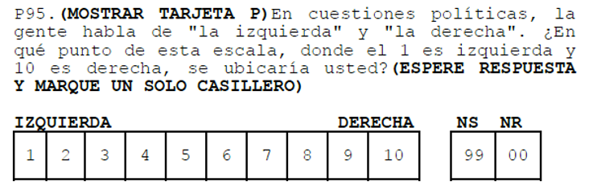
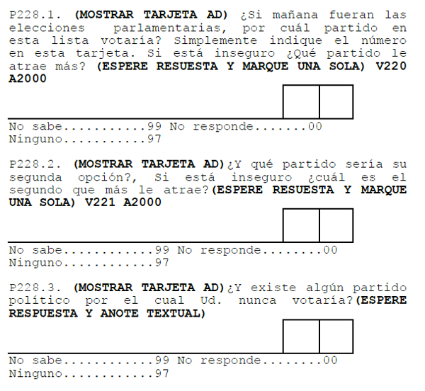
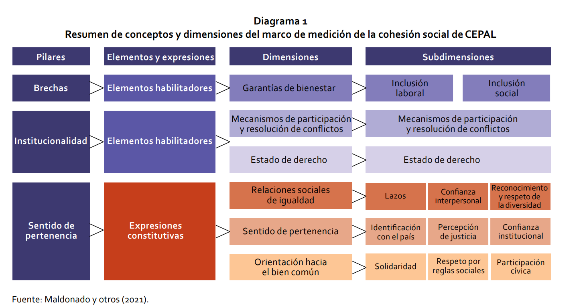
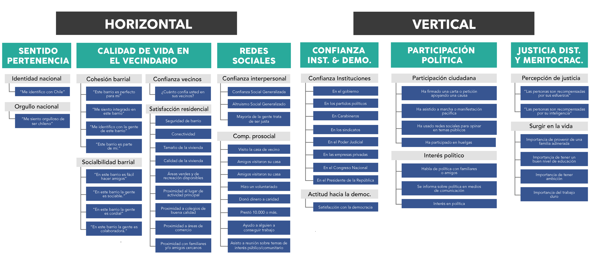

R para el análisis de datos
Sesión 4: Planteando una investigación cuantitativa
Kevin Carrasco
Sociología - UAH
1er Sem 2026
R-data-analisis.netlify.com
Introducción y bases de la investigación cuantitativa
Introducción y bases de la investigación cuantitativa
En la investigación cuantitativa se asume que hay una realidad “allá afuera” que quien investiga puede conocer a través de su cuantificación
Permite lidiar con la incertidumbre
Foco en la teoría (generalmente método hipotético-deductivo)
Introducción y bases de la investigación cuantitativa
Explicar lo que es, no lo que debería ser
Conocer y explicar grupos, no individuos
Proceso de investigación cuantitativo (D’Ancona 2001)
- Formulación del problema
- Diseño
- Hipótesis
- Operacionalización de conceptos
- Unidad de análisis
- Metodología
- Factibilidad
Medición y operacionalización
Medición y operacionalización
Operacionalización = codificación para hacer medible
Múltiples formas de medir un concepto
Importancia de definir conceptos
Medición y operacionalización
¿Qué concepto se mide?

Medición y operacionalización
¿Y con estas preguntas?

Medición y operacionalización
¿Conceptos complejos?
¿Cómo medir cohesión social?
Medición y operacionalización
- Cohesión social (CEPAL, 2021)

Medición y operacionalización
- Cohesión social (OCS-COES, 2020)

Diseños de investigación
- Transversal
- Longitudinal
- Experimental
Diseño transversal
Diseño longitudinal

Diseño experimental

Datos y variables
- Los datos miden una característica de una unidad en un tiempo
Ejemplo: esperanza de vida en Chile (2017)
- Variable: esperanza de vida
- Unidad: años
- Tiempo: 2017
- Variable: esperanza de vida
Datos y variables
- Base de datos

Datos y variables
- fila = caso
- columna = variable
- variable = valores numéricos
- valores pueden tener etiquetas
Datos y variables
Ejemplos
- CEP
- CASEN
- Latinobarómetro
- ELSOC
- MINEDUC
Datos y variables
Una variable = algo que varía
\(Variable \neq Constante\)
Datos y variables
- Discretas
- Dicotómicas
- Politómicas
- Dicotómicas
- Continuas
Escalas de medición
- NOIR
| Tipo | Características | Propiedad | Ejemplo |
|---|---|---|---|
| Nominal | Categorías | Identidad | Nacionalidad |
| Ordinal | Orden | Ranking | Educación |
| Intervalar | Intervalos iguales | Igualdad | Temperatura |
| Razón | Cero real | Aditividad | Distancia |
Medidas de tendencia central
Moda
Mediana
Media
Medidas de tendencia central
Dispersión
- Varianza
- Desviación estándar
Más información
Trabajo 1
Estructura de carpetas

Repositorio

GitHub Pages

Protocolo reproducible

R para el análisis de datos
Kevin Carrasco
Sociología - UAH
1er Sem 2026
R-data-analisis.netlify.com